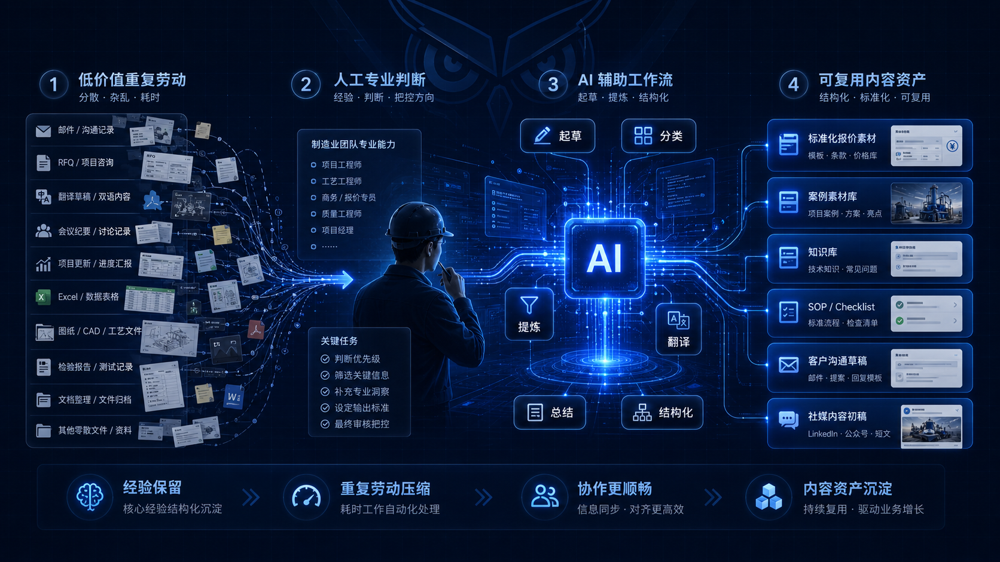

近年来，市场上充斥着各种关于 AI 颠覆制造业的宏大叙事。很多软件提供商试图将 AI 包装成能够“自动谈单的外贸员”或“自动排产的项目经理”。然而，对于身处一线的制造业团队而言，这种脱离业务实际的预期往往会带来极大的落差。
事实上，AI 不可能，也不应该被当作直接替代行业专家的魔法。对于每天面临复杂客户需求、打样异常和跨部门扯皮的外贸与项目团队来说，AI 最现实的作用是剥离那些消耗精力的“低价值重复劳动”，从而让人有更多的时间去处理真正需要经验判断的非标问题。
1. 为什么制造业经验不会被 AI 简单替代？
与纯文字、图像创作行业不同，制造业的本质不仅在于信息的传递，更在于物理世界的验证与交付。很多关键判断并不是写在维基百科里的标准化文本，而是基于现场环境、图纸公差、材料特性和供应链状况综合做出的折中决策。
- 无法承担最终的项目责任：AI 可以快速总结一份几十页的英文图纸规格说明，但它不能在因为材料缩水导致报废时承担财务和客户信任流失的责任。
- 难以应对真实的异常与博弈：真正的工程和外贸经验，体现在对隐蔽风险的预判、对车间异常的处理、对内跨部门的沟通协调，以及在客户逾期付款时的预期管理上。
- 物理边界的限制：客户的询盘看似简单，但涉及到机床的实际稼动率、模具的寿命折损等现实问题时，只有在一线摸爬滚打过的从业者才能给出最合适的建议。
"AI should not be packaged as a magic replacement for an engineer. It is an efficiency amplifier designed to compress the time spent on low-value repetitive work."
因此，千万不要把 AI 当成一个全知全能的“自动工程师”，而应该将其视为你的“效率放大器”。
2. AI 最适合压缩哪些重复劳动？
既然 AI 替代不了核心的业务判断，那么它的威力应该释放到哪里？答案是：内容生成的第一步。在制造业的外贸与项目运转中，存在大量机械性的文字与数据整理工作，这些才是 AI 大显身手的地方。
| 工作场景 | 传统方式 (人工作业) | AI 辅助后的方式 (人机协作) |
|---|---|---|
| 技术翻译 | 纯人工逐字翻译，耗时长且术语易错 | AI 快速生成术语一致的初稿，人工进行专业语境审校 |
| 外贸开发信 | 业务员花费半小时手写一封套话 | 输入客户背景与产品，AI 几秒钟产出初稿，人工微调定稿 |
| 客户回复 | 翻找历史邮件或从头苦思组织语言 | AI 基于历史语料与当前问题，提供逻辑清晰的结构化回复选项 |
| 社媒内容 | 缺乏排版灵感，配文枯燥单一 | 丢给 AI 一张车间图，一键裂变出适配多平台、不同语气的宣发文案 |
| 资料整理 | 研发交代的零散文档难以归档和复用 | AI 批量提取关键参数，快速生成网页说明、PPT 和 FAQ |
| 会议纪要 | 边听边记，容易遗漏核心行动项 | 语音转录后由 AI 自动提取核心风险点、责任人与时间线 |
| 报价前预审 | 业务员逐个对比图纸与参数列表 | AI 预提取客户询盘中的缺失参数，高亮提示业务员及时追问 |
制造业团队的 AI 工作流示例
构建一个切实可行的 AI 工作流，意味着你要学会在正确的地方引入大模型。不要让 AI 替你做决定，而是让 AI 替你打草稿、做分类、提炼核心点。

3. 真正的竞争力不是会不会用 AI，而是能否把经验结构化
随着各类工具的普及，单纯“会不会使用 AI”很快将不再是企业间拉开差距的壁垒。所有人都能用 ChatGPT 写出一封得体的邮件。真正的核心壁垒在于：企业能不能把多年积累的工艺经验、历史客户的灵魂拷问、踩过坑的项目复盘、以及严谨的报价逻辑，沉淀成高质量的结构化知识。
中小制造企业最应该做的，不是去盲目投资昂贵的所谓“行业 AI 系统”，而是先从团队中最繁琐、低风险、高频率的场景开始切入。例如利用 AI 协助技术资料的翻译、重写官网产品文案、整理过往案例并产出标准 FAQ。
不要幻想接入了 AI 就能直接自动产生源源不断的海外订单，这是不切实际的。但不可否认的是，它能极大地降低内容生产的边际成本、提高对客户询盘的响应速度、并有效改善跨语种客户的理解效率。
归根结底，AI 不会替代真正懂制造业的人，但它一定会成倍放大那些愿意梳理经验、复用知识、持续优化标准流程的团队的综合战斗力。